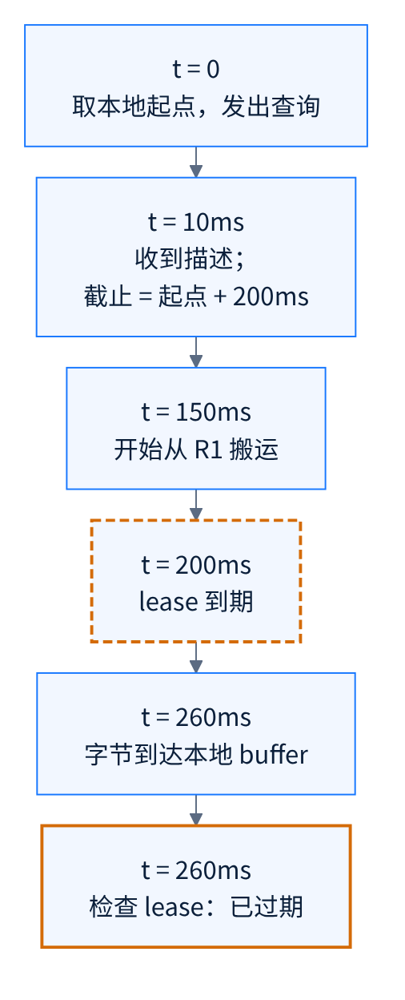

摘要：B 从 R1 读回了字节，这次 Get 仍可能失败。定位、搬完、可接受，是三个不同时刻。
实例 B 查询 key K，Master 返回 R1 的副本描述与一段读保护。
B 开始从 R1 搬运数据。传输很慢，跨过了 lease 的截止时间。字节最终全部到达本地 buffer。
这时候，这次 Get 算成功吗？
答案取决于一个容易被忽略的顺序：数据搬完在前，结果检查在后。 本篇只跟 B 的这一次慢读，把它拆成"已定位、已搬完、可接受"三个时刻，说明为什么读回字节不等于可以接受结果。后面的 LOCAL_DISK offload 分支是一个明确的例外。
读方拿到副本描述后，系统不能马上把对应空间用于其他对象，否则读方可能访问到已被复用的数据。
Lease 提供的正是这个有边界的读取窗口。它保护的不只是地址，而是"在这段时间内，这份数据不会被正常删除或淘汰"。
Master 在返回可读副本列表时授予 lease，并在响应里带上 TTL。客户端不是直接使用 Master 的时间：它在发出查询 RPC 之前先取一次本地 steady_clock 起点，收到响应后用 start_time + lease_ttl_ms 算出截止时间。因此查询 RPC 本身的耗时也计入客户端的可用窗口；TTL 不是从响应到达才开始计时。
按相对时间展开这次慢读。假设 lease TTL 是 200ms——这个数值只用于示意，不是默认配置：

图注：B 在查询前取本地起点，截止 = 起点 + TTL。搬运跨过截止点后，字节仍可能到达，但事后检查返回 LEASE_EXPIRED。橙色虚线框标出到期点；LOCAL_DISK offload 例外见正文。
这里说的"事后检查"有明确范围。v0.3.13.post1 中，RealClient::get_buffer_internal 的 LOCAL_DISK 全量 offload 分支直接调用 batch_get_into_offload_object_internal，之后只做 checksum，不调用 IsLeaseExpired，因此不经过 Client::Get 的同一处事后检查。同一实现里的 DISK 副本仍走 Client::Get，会经过检查。所以例外属于那条 offload 路径，不能外推到所有磁盘读取。
这条路径采用"尽力读 + 事后否决"：先完成传输，再判断这次读取是否仍在承诺窗口内。
分析：好处是实现简单，不需要在传输前阻塞等待；代价是 lease 过期时已经浪费了一次带宽。对 KV Cache 这种"读失败可以重算"的场景，这个取舍是成立的。
把一次 Get 压缩成四个阶段，会更容易定位问题出在哪：
Client::Get 的路径，LOCAL_DISK offload 例外见上。Master 只过滤并返回可读副本列表，不替客户端选副本。 选择发生在客户端：
Client::Get 内部调用 FindFirstCompleteReplica，取列表中第一个 COMPLETE 副本；RealClient 的 ranged 路径在进入 Client::Get 之前，用 SelectBestReplica 先选一次，再把副本列表裁成只剩选中的那一个。SelectBestReplica 会跳过非 COMPLETE 副本，优先级是：本地 MEMORY → 本地 NOF_SSD → 远端 MEMORY（可评分）→ 远端 NOF_SSD → LOCAL_DISK → DFS → DISK。
搬运方式则取决于介质和目标：
MEMORY（目标 buffer 在主机且可直读）：交给 Transfer Engine 读到目标 buffer。
MEMORY（目标 buffer 在 GPU 等设备）：主机暂存后再复制到目标。
LOCAL_DISK：存储节点执行 offload 读取。
DISK / DFS：临时 buffer 后再 scatter。
"直读目标 buffer"通常表示避免额外的应用层中转，不是对所有后端、所有设备的零拷贝承诺。TCP、RDMA、GPU 路径内部是否拷贝，要按实际后端判断。
一次慢读结束后，有三个结果需要分开：
Client::Get 才把它当作可用结果。lease 到期只代表保护窗口结束，不代表对象立刻被删除。有效期内的 lease 会阻止普通 Remove 与淘汰路径回收这份对象；删除侧遇到的 OBJECT_HAS_LEASE 就是这一保护的证据。
但实际回收还要经过淘汰、引用计数、后台任务等一系列判断。所以不要把两件事混为一谈：
LEASE_EXPIRED：这次读取的结果不再受承诺保护，客户端应拒绝使用；前者是读方看到的错误，后者是资源侧的动作。中间隔着完整的回收判断。
把错误按阶段分开，上层才能决定是重试、换副本，还是重算。
查询阶段
OBJECT_NOT_FOUND：对象不存在，或所有副本都已 REMOVED。应当放弃。REPLICA_IS_NOT_READY：对象存在，但暂时没有可用副本。值得短暂重试。选择阶段
INVALID_REPLICA：列表里没有选到 COMPLETE 副本。搬运与完成检查
在 Client::Get 中，顺序是：先 TransferRead（或 ReadDfsReplica），再可选 checksum，最后检查 lease。传输失败直接返回后端错误；checksum 不符返回 CHECKSUM_MISMATCH；只有前两者都通过，才可能返回 LEASE_EXPIRED。
INVALID_PARAMS：在按容量传入目标 buffer 的读取路径中，buffer 小于对象大小会返回该错误；系统不会截断读取，避免调用方误以为读全了。LEASE_EXPIRED：字节可能已经读到，但结果不再受保护。按可重试错误处理，而不是数据损坏。CHECKSUM_MISMATCH：仅在启用 checksum 且期望值不符时出现。该校验默认关闭，不要写成默认路径。错误分类越准确，越容易判断问题发生在查询、选择、搬运还是完成检查阶段。这次 Get 返回错误后，是否重试这次读取、换一个副本，还是让推理请求重算前缀，由调用方或推理框架决定；Client::Get 只把对应阶段的错误交回去。
B 已经知道 R1 可读，也读回了字节。下一次追踪这条路径时，从哪里开始看？
源码延伸：原系列篇3；Client::Get、Client::Query、QueryResult::IsLeaseExpired、SelectBestReplica、GetReplicaList、RealClient::get_buffer_internal。版本基线为 v0.3.13.post1。